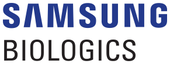

설립연도
2011년

세포를 키워서 만드는 바이오 의약품을 다른 제약회사 대신 개발하고 대량으로 생산해 주는 회사예요. 직접 약을 팔기보다 주문을 받아 만들어 주는 "의약품 위탁 생산 공장"에 가까워요. 인천 송도에 세계적인 규모의 생산 공장을 두고 있어요.
칸에 마우스를 올리거나 누르면 자세한 설명을 볼 수 있어요.
제약회사가 개발한 바이오 의약품을 대형 탱크에서 세포를 키워 대량으로 만들어 줘요. 인천 송도에 세계 최대급 공장들을 두고 있어요.
대표 예항체 의약품 대량 생산, 송도 1~5공장
신약 후보 물질을 실제로 대량 생산할 수 있도록 세포를 고르고 생산 방법을 개발해 줘요. 개발 단계부터 맡은 고객이 나중에 생산도 맡기는 경우가 많아요.
대표 예세포주 개발, 생산 공정 개발
만든 의약품이 기준에 맞는지, 안전한지를 시험·분석해 주는 서비스예요.
대표 예품질·안전성 시험, 분석
암세포만 골라 공격하는 항체·약물 결합체(ADC) 같은 새 의약품 기술을 생산할 수 있는 시설을 늘리고 있어요.
대표 예ADC 전용 생산 시설
| 기간 | 매출 | 영업이익 | 순이익 |
|---|
사업마다 겨루는 상대가 달라요